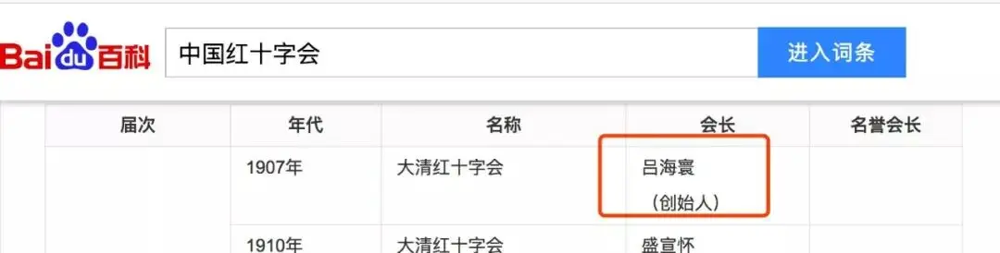
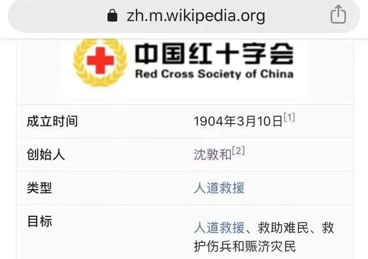
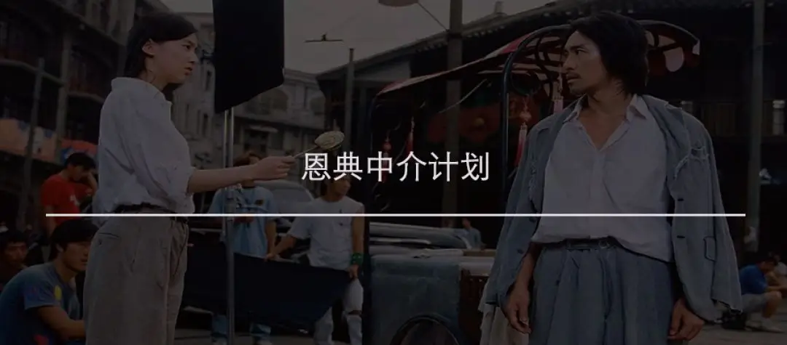
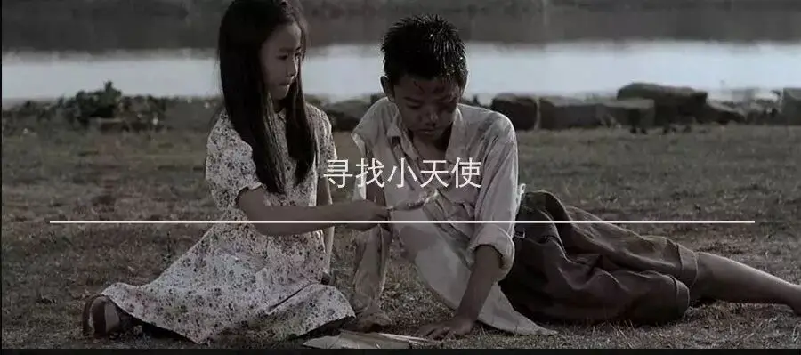

id="js_content" style="">-01-
1859年6月，瑞士人，基督徒，亨利·杜南，途经意大利一个城市。
正好，杜南碰上了一场战争。
当时交战双方死伤惨重，到处都是痛苦绝望的哭喊声。
第一次，杜南目睹了战争的恐怖。
上帝赐给每个人不可剥夺的生命权在此刻竟然被无情地践踏。
这番景象燃起了亨利·杜南心中对于生命的珍重，所以他大发热心，自愿组织人员为受伤士兵提供救援。
△参见电影：《亨利·杜南：十字上的红》
他的救援行动是完全中立的，并不看国籍、强弱，只要是一个受伤的人，他都会努力去救助。
1862年，他根据这段经历写了《索尔费里诺回忆录》。
他在本书中提出建议想要建立一个救援组织。
他的构想里，这个救援组织有两个极为重要的特征：
首先就是中立，救援是出于人道主义精神，是出于对于上帝所造生命之珍重，所以，这个组织最重要、甚至是唯一的使命就是：救人！
其次这个救援组织一定是民间成立的组织，而强调民间，也是为了保证组织最重要的中立性。
否则，这个救援组织就极容易被权势绑架，会将利益放在生命之前。
多南的理念和构想是相当深刻的，正是以他的思想为蓝本，后来才有了日内瓦公约和国际红十字会，也让他获得了诺贝尔和平奖。
日内瓦公约是一个国际性公约，主要用于保护平民和战争受难者。
也就是说，即使你是一个战俘，你也有生命权，别人就不可以无底线地迫害你，必须要保证你的生命权和信仰自由。
如果你不遵守这些公约，那你毫无疑问就是一个被全世界唾骂的野蛮国家。
而国际红十字会更是各个国家民间自发成立的组织，他们奔赴在战场上，不分敌我，见人就救，也不收取费用。
在第一次和第二次世界大战中，日内瓦公约和红十字会救助了无数生命。
也正是出于对红十字会人道主义精神的敬畏，即使两军交战，如果出现红十字会的人员，双方一般都会忌惮，不会去伤害他们。
因为他们知道，如果自己受伤了，只有这些人会无条件地对他们进行救助。
-02-
1894年，甲午中日战争爆发，这场战争给中国人带来了深重的灾难。
而正是这场战争，让大清帝国第一次窥见了红十字会的“不一般”。
当时日本的“赤十字社”奔赴战场开展救援活动，而让中国人蒙圈的是，这伙人不仅救日本人，中国人也救。
这让大清官员大为震撼。
之后，就有人不断向朝廷建议要成立红十字会。
可大清一直不置可否，也许是因为他们实在整不清楚这红十字会的行事逻辑。
也许认为如果成立了红十字会，那是不是要听国际上的话，那样的话，那还得了。
当时中国人虽然普遍愚昧，但并不是没有睁眼看世界的人。
这些人中间就有个人叫沈敦和，他毕业于剑桥大学，对红十字会的人道主义精神非常认同，他早想着要成立中国的红十字会，可当时的情形，皇帝不点点头，自己哪敢做啊。
1904年，日俄战争爆发，东北大把大把中国难民，各国红十字会自愿者奔走救援，然而却没有自家人在其中，这个场面多尴尬。
沈敦和看准了时机，想要成立红十字会，但是龙椅上的老大没有点头，心里始终还是没有底。
后来，沈敦和想到了个妙招，想要以当时在华英、法、德、美代表的名义成立个国际红十字会委员会承认的中立组织，这样清政府就不会觉得自己是在造反。
1904年3月10日，盛宣怀透过传教士李提摩太，邀集上海租界中各国领事与富商，仿效瑞士红十字会的章程与组织，成立上海万国红十字会。
希望利用国际力量，让交战国双方依日内瓦公约，让万国红十字会进入战区救援。
万国红十字会以董事会为最高机构，由45名董事组成，在当中又推选出9名办事董事，其中7名外国租界董事，有李提摩太、英租界总董、法租界总董等人，2名华人董事，沈敦和列名其中。
日俄战争期间，沈敦和用红十字会的中立性作为盾牌，带人进入日俄交战地区救护被困在里面的中国平民百姓，在中国东北救援了超过25万平民。
这个民间组织的力量和胸怀是很大的，在当时不仅救援了中国人，还开展了国际援助。
1906年，在旧金山发生地震和火灾，摧毁了城市，造成了3,000人死亡。
上海万国红十字会为旧金山捐献了20,000两白银。
当时中国的医疗卫生水平很差，瘟疫肆虐，造来的死亡也非常严重。
之后沈敦和还成立了中国红十字会时疫医院，专门帮助老百姓和疫情抗争。
关于这所医院，我能查到的资料很少。
在1930年代，这所医院曾经迁移了地方，在迁移重新开张后，当时在报刊上刊登了一篇面向全社会的开张通告。
大家可以感受一下90年前的防疫医院的通告水平：
本会时疫医院创始于逊清宣统元年，迄今已二十有三年，救活病人二十余万之谱。
际此天气酷热，时疫渐渐发生，经本会议决在静安寺路新世界北部原址西首。
本医院历年在天津路设办，今因翻造房屋，改迁今址，择于七月五日开幕，专治一切痧症，如瘪螺、吊脚、绞肠、冷麻等。
并公推颜惠庆、王正廷、钱新之、穆藕初、狄楚青、宋汉章、黄涵之、刘鸿生、林康侯、赵晋卿、袁履登、关炯之、邬志豪、冯炳南、方椒伯、秦润卿、黄金荣、杜月笙、张啸林、孙梅堂、谢蘅窗、朱静安、张天赐、王延松、荣宗敬、袁仲慰、张尔云、谢韬甫、陈炳谦、叶海田、谭蓉圃、徐庆云、顾馨一、沈联芳、姚虞琴、哈少甫、劳敬修、余日章、周湘龄、李伟侯、陈雪佳、朱吟江、朱弃尘、蔡翔如、汪伯奇、张铁民、杨梅南、王体仁诸君为院董，监督协助，以冀院务日臻完善。
届时务祈政商工学各界诸公及本会会员宾临参观，并指教进行，无任盼幸之至，深恐柬请不周，特再登报。
伏望各病户痧症初发时，即速送至本院诊治，切勿挑痧，自误性命。
本院备有汽车，随时救护运送病人，非常安稳，如需用时，并不收费，专此布告，诸希台鉴。
-03-
沈敦和创办的上海万国红十字会赢来了社会的一致好评。
而清政府也一直在远处审慎观望。
看着中国人自己办的也像模像样的，朝廷终于决定要出手收获胜利果实。
1907年，清政府派出吕海寰去接手，对上海万国红十字会进行了改组，排除了所有外国董事，并正式更名为大清红十字会。
沈敦和曾试图向盛宣怀解释红十字人道主义精神，并告诉他，正因为红十字会是民间组织，才可以遇到问题毫无顾虑地救死扶伤。倘若改为官办，那一切行动只能在军队背后，这与红十字的中立精神和人道主义宗旨完全背道而驰。
可当时清政府外行指挥内行，大清红十字会大印还是最终刻了出来。
就这样，吕海寰摇身一变，成为了中国红十字会的创始人。
而沈敦和却渐渐被人遗忘。
直到现在，我们的百度百科依旧将吕海寰看为中国红十字会创始人，而沈敦和却只字不提。

幸好，这个世界还有个比较良心的百科，他们选择和真相站在一起：

1911年，武昌起义爆发。
大清帝国红十字会在武汉的表现让人大跌眼镜。
他们不仅遇事毫无章法，效率低下。
更让全世界沦为笑柄的是，这个红十字会并不是把人命放在第一位，他们只救清军，不救革命党人。
辛亥革命成功后，革命党人立马将大清帝国红十字会改名为中国红十字会。
就这样，被人嫌弃的大清帝国红十字会很快便嗝屁了。
-END-
恩典中介实时播报
截至目前
我们已经收到70单求助信息
已经援助完成21单
32单正在进行中
还有17单没有着落
我们真的真的需要你
特别提醒：
我们不需要金钱捐助
只需要物资
▼


这里没有挑逗你眼目情欲的小鲜肉
也没有挑动你肉体情欲的段子
更没有膨胀你今生骄傲的鸡血
我们只在乎那些最质朴真诚的作品
在那里我们才能恢复真正的想象力
我们也坚信这才是我们真正需要的

ID:Six_hundred_hits
长按二维码，一键关注
【六百击】
电影评论
尽情分享朋友圈

微信二维码打赏通